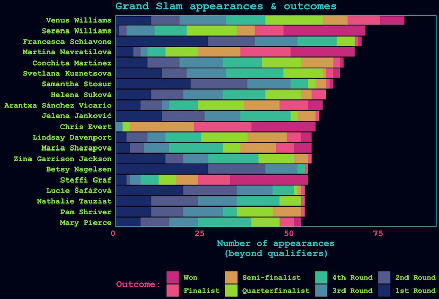

Still swimming
trying out some formatting for font type
more TESTING
and some LaTeX \(a = bx^2-7\)
Then a code chunk:
Allison <- 10
Horst <- 15
ggplot(cars, aes(x = speed, y = dist)) +
geom_point()
Seems to recognize pathway from the post folder (I think), but doesn’t work when rendered…probably some really basic screw up here….
